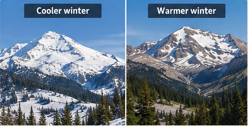
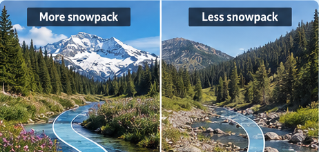
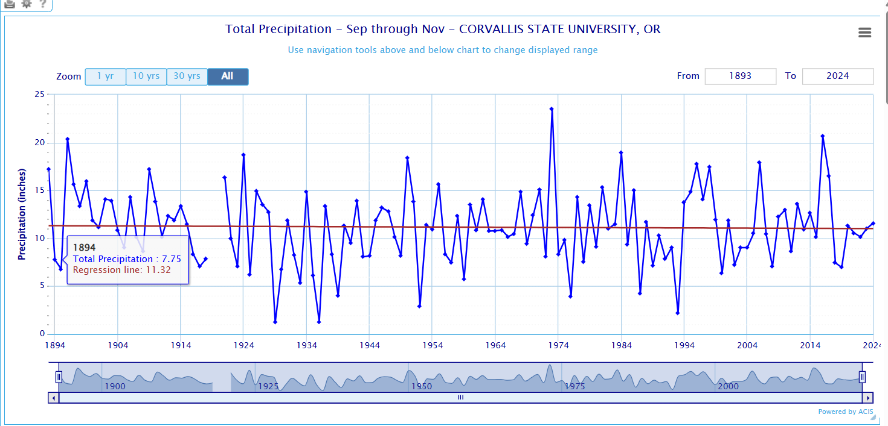

Even when annual precipitation changes very little, a warmer climate can change how water is stored, when it becomes available, and how much plants need. Here is how the patterns you explored connect to gardening.
1
Warmer winters can mean less snowpack
As temperatures rise, more winter precipitation may fall as rain instead of snow. Snow that accumulates may also melt earlier.

Snowpack acts as a natural reservoir, storing water in the mountains.
Remember the video? Less snow storage can mean less gradual snowmelt to supply water later in the year.
2
Less snowpack can reduce summer water availability
Mountain snowpack gradually releases water during spring and summer. When less water is stored as snow, the timing of streamflow shifts and some snow-dependent watersheds may have less water available in summer.

Water falling as rain does not disappear; it may run off or enter other storage sooner instead of remaining in snowpack.
Even when annual precipitation is similar, summer water supplies may change.
3
Fall precipitation shows a slight decline in Corvallis
The Corvallis record shows considerable year-to-year variation, with a nearly flat but slightly downward fall precipitation trend. This is a local observation, not a statewide conclusion.

Actual ACIS fall precipitation chart, Corvallis State University station, 1893–2024.
For gardeners: Drier falls, when they occur, can mean checking soil moisture and watering new plantings or fall crops longer into the season.
🌱 The big takeaway
It is not just how much precipitation falls. Warming can affect three important parts of the garden water picture:
🌡 How much water plants needWarmer conditions can increase evaporation and plant water demand.
🏔 How water is storedWarmer winters can reduce the natural snowpack reservoir.
📅 When water is availableSnowmelt timing and seasonal rainfall patterns affect soil moisture and water supplies.
Educational note: These are potential impacts, not guaranteed outcomes at every site. Summer water availability depends on watershed conditions, groundwater, reservoirs, and water management. The fall graph illustrates the Corvallis station record only.